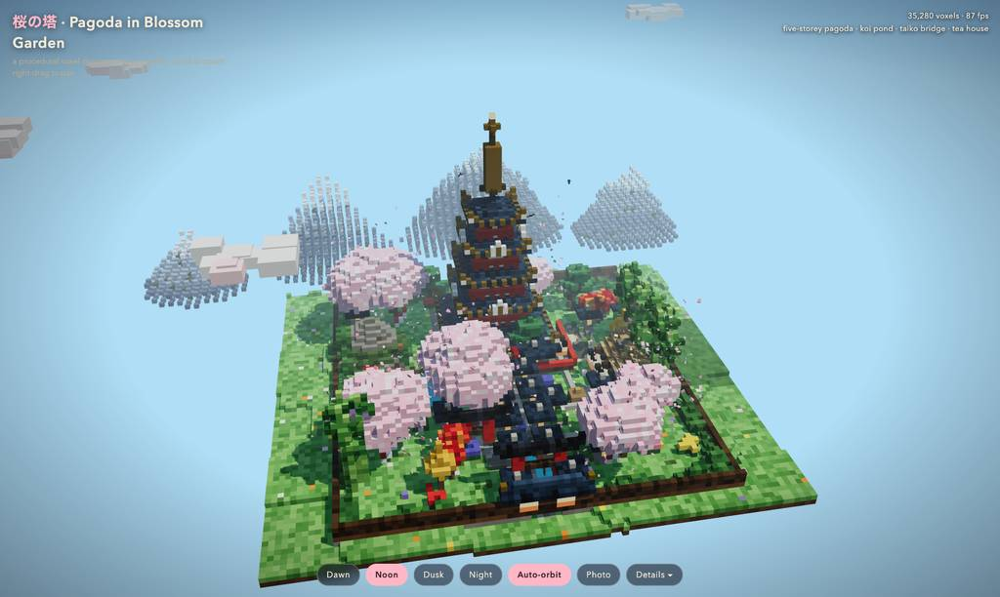
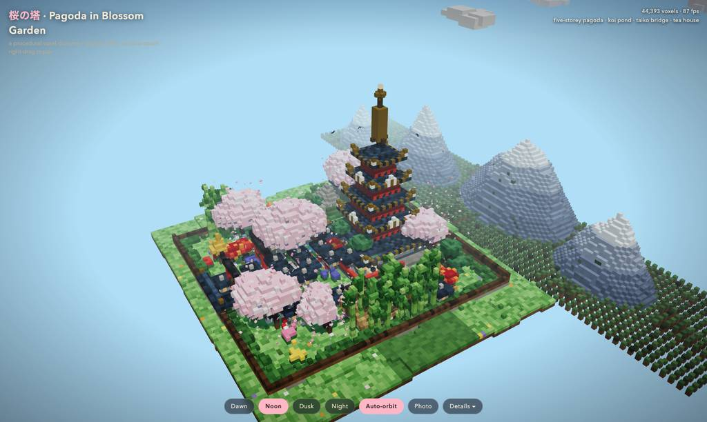
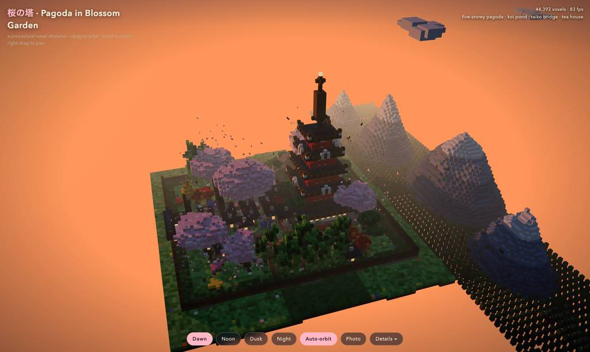
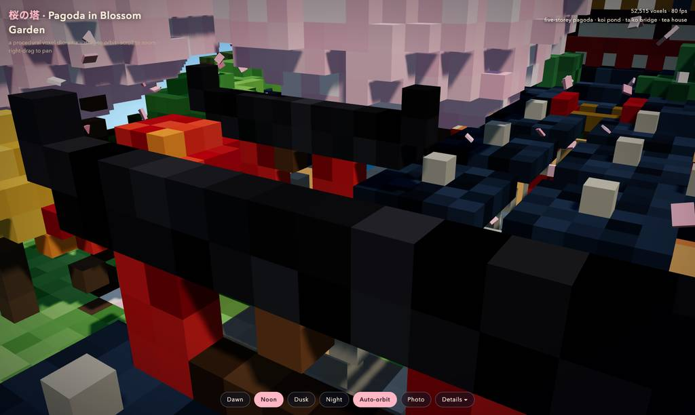
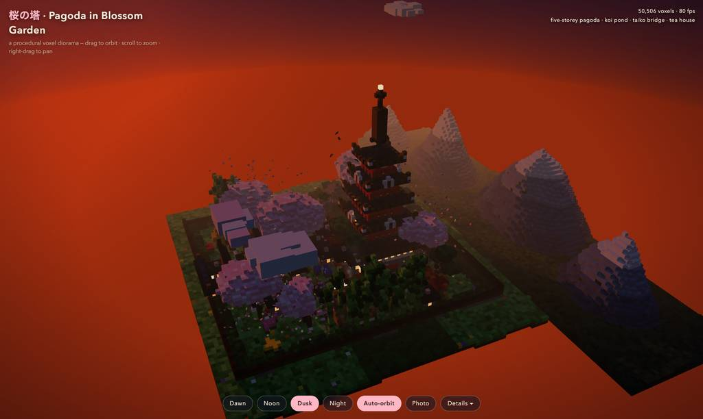
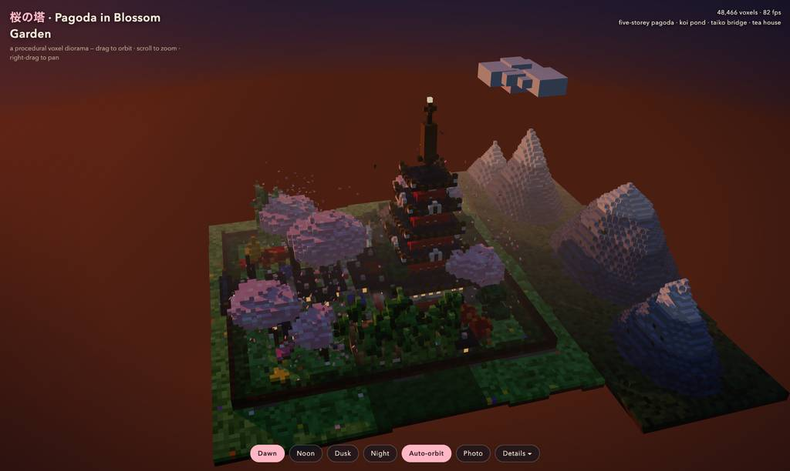

runs / 2026-10-20 / 085502-488000-baseline-a698f834
全書き換え失敗から段階的パッチへ方針転換、49分で単一HTML完成
qwen3.8-flash-next-unsloth-ud-q4_k_xl（thinking=high）がボクセル五重塔庭園を単一HTMLで構築し、2926.5秒・主呼び出し81回・exit 0で完了した。#2で初版を書いたが#8の全文書き換えは出力トークン上限に達して未実行に終わり、E3の失敗を機に#9以降はread+editの小パッチとブラウザスクリーンショット検証の反復に切り替わった。最終成果物はpagoda-garden.html（63,770バイト、20枚のショットで確認）。
成果物
work/pagoda-garden.html（63,770 バイト）をそのまま同梱している。重いシーンもあるため、必要なときだけ起動する。
pagoda-garden.html
62 KB · 起動するまで読み込まない












全 20 枚から等間隔に 12 枚を選んでいる。logs/events.jsonl の画像ブロックを内容ハッシュで重複排除して時系列に並べた、制作中の検証用スクリーンショット。最終版とは限らない。
成果物の構成
| 要素 | 内容 |
|---|---|
| 成果物構成 | 単一HTMLファイル68 KB（計測上のアーティファクトは63,770バイト）。依存はimportmap経由のThree.js r160（CDN読み込み）のみと報告。 |
| 五重塔 | 朱の隅柱と漆喰壁、金縁の多段瓦屋根、白鬼瓦付き反り上がり金鍍金隅、2・4層目千鳥破風、欄干、蝋燭灯りの格子窓、釣鐘、九輪相輪と珠宝珠。 |
| 庭園 | 苔岩の崖からの滝で給水される鯉の池、太鼓橋、水車のある小川、枯山水の同心砂紋、茶室（茅葺・障子・煙突煙）、添水状態機、鳥居と稲荷社、計13基の石灯籠。 |
| 動植物 | 桜6本と落花720枚、雲形刈込松・モミジ・イチョウ・シダレ柳・竹林40本、鯉5尾・亀・鶴・鳥・夜間はホタル140と星500。 |
| インタラクション | orbit/zoom/panと自動旋回、Dawn/Noon/Dusk/Nightプリセットの1.3秒イージング遷移、PNGスナップショット、要素一覧パネル。 |
| アーキテクチャ | mulberry32+値ノイズfbmの決定論的生成、4種のボクセルMapを4つのInstancedMesh描画にベイク。 |
| 検証申告 | 最終メッセージの自己申告で、コンソールエラー0、48,466ボクセル、78–87fps、全UIボタンとポインタ操作をヘッドレスChromiumで確認済み（#76–#79の操作試験に対応）。 |
モデルの最終メッセージから読み取った内容。コードの確認はしていない。
タイムライン
81 回の API 呼び出しを時間順に並べた。上段の帯の幅が各呼び出しの所要時間で、帯の間の空白がツールの実行時間。下段はその時点のコンテキスト長。
最も長い 2 回の生成（#8 574 秒・#2 458 秒）で 1032.3 秒、壁時計の 35.3%。出力トークンの上位 4 回（#8・#2・#1・#15）で全体の 68.6%（94,244 / 137,398）。推論以外（ツール実行など）は約 188 秒（6%）。
フェーズ別の内訳
| フェーズ | 経過 | 所要 | 全体に占める割合 | 呼び出し | 出力 tok | 何をしたか |
|---|---|---|---|---|---|---|
| 初版生成 | 0:00–23:22 | 1402 秒 | 47.9% | 8 | 79,411 | #1で作業ディレクトリ確認とCDN到達テスト後、#2で単一HTMLを初稿執筆。#3–#7で構文チェックとブラウザ初表示・エラー確認し、#8で全文書き換えを試みたが出力上限で不発に終わった。 |
| 一括パッチ | 23:22–31:30 | 488 秒 | 16.7% | 10 | 24,370 | #9–#14で塔・小道具・動的エンティティ・ループの該当領域を段階的に読み出し、#15–#17でパッチ適用と枯山水地面の平坦化を実施。#18でモジュール構文を再チェックした。 |
| 昼景の反復調整 | 31:30–36:24 | 294 秒 | 10.1% | 15 | 11,919 | リロードとスクリーンショットで昼描画を検証し、#22–#23でinstancedマテリアルのvertexColors除去、#27で樹冠・山・相輪・フレーミングを修正。#33で滝のある崖と雲・カメラを調整した。 |
| 光と空の調整 | 36:24–41:57 | 333 秒 | 11.4% | 18 | 9,147 | #36で山を森林平地に接地させ、#39–#43で夜間とグロー・ホタルの明るさを強化。#46–#50で夕方の空の彩度を抑え、森林を密にし空のグラデーションを鋭くした。 |
| カメラ検査復旧 | 41:57–42:44 | 47 秒 | 1.6% | 9 | 1,917 | orbitをカメラ検査用に公開する際、変数未定義（E6）とeditアンカー拒否（E7）で#53–#59が反復失敗。デバッグハンドルの位置修正を重ね、#60の構文再チェックで正常化した。 |
| 最終視覚検証 | 42:44–46:57 | 254 秒 | 8.7% | 15 | 7,319 | #61–#63の接写で塔と池を確認後、#65–#74でシネマティックな空のグラデーション・夕暮れ/夜明けのパレット・霧色を微調整。#74でデバッグハンドルを除去し#75で最終構文チェック。 |
| UI操作試験 | 46:57–48:43 | 106 秒 | 3.6% | 6 | 3,315 | #76–#78でドラッグ・ボタン・ホイール・パンを実操作し、#80でタブを解放。#81で最終報告を生成した。 |
フェーズの切れ目は、ログから読み取れる作業内容の変わり目（LLM による区切り）。所要時間は、そのフェーズの最初の呼び出しの開始から次のフェーズの最初の呼び出しの開始まで。
81 回の呼び出しを表で見る
| # | 種別 | フェーズ | 開始 | 所要 秒 | prompt | うち cache | 出力 | tok/s | HTTP | ツール |
|---|---|---|---|---|---|---|---|---|---|---|
| 1 | 主ループ | 初版生成 | 0:00 | 324.8 | 7,805 | 7,624 | 16,517 | 52.1 | 200 | bash + bash |
| 2 | 主ループ | 初版生成 | 5:25 | 458.2 | 24,526 | 7,800 | 29,025 | 64.4 | 200 | write |
| 3 | 主ループ | 初版生成 | 13:03 | 14.5 | 53,586 | 24,521 | 202 | 57.6 | 200 | bash |
| 4 | 主ループ | 初版生成 | 13:18 | 5.2 | 53,815 | 53,787 | 256 | 56.8 | 200 | eval |
| 5 | 主ループ | 初版生成 | 13:23 | 3.1 | 54,304 | 54,071 | 109 | 47.0 | 200 | read |
| 6 | 主ループ | 初版生成 | 13:26 | 8.1 | 57,453 | 54,412 | 340 | 54.6 | 200 | eval |
| 7 | 主ループ | 初版生成 | 13:43 | 4.4 | 58,110 | 57,797 | 194 | 57.2 | 200 | eval |
| 8 | 主ループ | 初版生成 | 13:48 | 574.1 | 58,591 | 58,303 | 32,768 | 57.2 | 200 | write |
| 9 | 主ループ | 一括パッチ | 23:22 | 18.3 | 68,966 | 58,586 | 656 | 49.5 | 200 | read |
| 10 | 主ループ | 一括パッチ | 23:40 | 4.1 | 72,898 | 69,623 | 104 | 49.9 | 200 | read |
| 11 | 主ループ | 一括パッチ | 23:44 | 3.2 | 75,425 | 73,002 | 80 | 57.3 | 200 | read |
| 12 | 主ループ | 一括パッチ | 23:48 | 4.1 | 79,134 | 75,505 | 130 | 61.7 | 200 | read |
| 13 | 主ループ | 一括パッチ | 23:52 | 126.4 | 81,467 | 79,263 | 6,592 | 52.9 | 200 | read + read |
| 14 | 主ループ | 一括パッチ | 25:58 | 6.4 | 98,991 | 88,058 | 82 | 60.2 | 200 | read |
| 15 | 主ループ | 一括パッチ | 26:04 | 295.6 | 103,906 | 99,073 | 15,934 | 54.3 | 200 | edit + read |
| 16 | 主ループ | 一括パッチ | 31:00 | 14.5 | 127,354 | 103,901 | 179 | 44.1 | 200 | read |
| 17 | 主ループ | 一括パッチ | 31:15 | 10.4 | 128,085 | 127,533 | 445 | 48.8 | 200 | edit |
| 18 | 主ループ | 一括パッチ | 31:25 | 4.4 | 128,874 | 128,530 | 168 | 51.1 | 200 | bash |
| 19 | 主ループ | 昼景の反復調整 | 31:30 | 4.3 | 129,060 | 129,041 | 212 | 56.2 | 200 | eval |
| 20 | 主ループ | 昼景の反復調整 | 31:43 | 6.3 | 129,553 | 129,271 | 277 | 53.3 | 200 | eval |
| 21 | 主ループ | 昼景の反復調整 | 31:59 | 3.6 | 129,944 | 129,829 | 142 | 50.4 | 200 | read |
| 22 | 主ループ | 昼景の反復調整 | 32:02 | 25.9 | 130,731 | 130,086 | 1,214 | 49.4 | 200 | edit |
| 23 | 主ループ | 昼景の反復調整 | 32:28 | 4.9 | 132,226 | 131,944 | 208 | 54.8 | 200 | edit |
| 24 | 主ループ | 昼景の反復調整 | 32:33 | 6.6 | 132,732 | 132,434 | 299 | 54.6 | 200 | eval |
| 25 | 主ループ | 昼景の反復調整 | 32:49 | 2.5 | 133,104 | 133,031 | 96 | 52.0 | 200 | read |
| 26 | 主ループ | 昼景の反復調整 | 32:51 | 67.7 | 133,845 | 133,201 | 3,089 | 46.6 | 200 | grep |
| 27 | 主ループ | 昼景の反復調整 | 33:59 | 12.5 | 137,540 | 136,935 | 562 | 50.0 | 200 | edit |
| 28 | 主ループ | 昼景の反復調整 | 34:11 | 8.7 | 138,688 | 138,103 | 349 | 47.6 | 200 | eval |
| 29 | 主ループ | 昼景の反復調整 | 34:29 | 2.4 | 139,109 | 139,038 | 96 | 56.0 | 200 | read |
| 30 | 主ループ | 昼景の反復調整 | 34:31 | 60.7 | 139,850 | 139,204 | 2,871 | 48.5 | 200 | read |
| 31 | 主ループ | 昼景の反復調整 | 35:32 | 26.4 | 144,342 | 142,721 | 1,294 | 52.7 | 200 | grep |
| 32 | 主ループ | 昼景の反復調整 | 35:59 | 7.1 | 145,814 | 145,635 | 288 | 46.3 | 200 | grep |
| 33 | 主ループ | 昼景の反復調整 | 36:06 | 17.7 | 146,301 | 146,103 | 922 | 55.6 | 200 | edit |
| 34 | 主ループ | 光と空の調整 | 36:24 | 17.1 | 148,443 | 147,225 | 764 | 50.1 | 200 | eval |
| 35 | 主ループ | 光と空の調整 | 36:50 | 3.3 | 149,322 | 149,206 | 121 | 48.4 | 200 | read |
| 36 | 主ループ | 光と空の調整 | 36:53 | 50.2 | 150,088 | 149,442 | 2,466 | 50.5 | 200 | edit |
| 37 | 主ループ | 光と空の調整 | 37:43 | 7.2 | 153,091 | 150,083 | 260 | 54.6 | 200 | eval |
| 38 | 主ループ | 光と空の調整 | 38:02 | 3.8 | 153,483 | 153,352 | 175 | 58.6 | 200 | read + read |
| 39 | 主ループ | 光と空の調整 | 38:06 | 39.7 | 154,302 | 103,901 | 915 | 49.5 | 200 | edit |
| 40 | 主ループ | 光と空の調整 | 38:46 | 3.8 | 155,613 | 155,218 | 122 | 49.7 | 200 | grep |
| 41 | 主ループ | 光と空の調整 | 38:50 | 10.2 | 156,212 | 155,734 | 469 | 52.0 | 200 | edit |
| 42 | 主ループ | 光と空の調整 | 39:00 | 2.9 | 157,225 | 156,682 | 80 | 50.8 | 200 | grep |
| 43 | 主ループ | 光と空の調整 | 39:03 | 5.3 | 157,462 | 157,305 | 203 | 47.2 | 200 | edit |
| 44 | 主ループ | 光と空の調整 | 39:08 | 6.1 | 157,826 | 157,664 | 282 | 56.9 | 200 | eval |
| 45 | 主ループ | 光と空の調整 | 39:29 | 4.3 | 158,279 | 158,107 | 193 | 56.4 | 200 | read + read |
| 46 | 主ループ | 光と空の調整 | 39:33 | 53.3 | 158,493 | 58,586 | 635 | 47.5 | 200 | edit |
| 47 | 主ループ | 光と空の調整 | 40:26 | 7.8 | 159,574 | 159,127 | 357 | 54.6 | 200 | eval |
| 48 | 主ループ | 光と空の調整 | 40:49 | 4.2 | 160,071 | 159,930 | 199 | 58.5 | 200 | read + read |
| 49 | 主ループ | 光と空の調整 | 40:53 | 31.3 | 160,304 | 127,706 | 779 | 47.0 | 200 | grep |
| 50 | 主ループ | 光と空の調整 | 41:24 | 12.0 | 161,442 | 161,083 | 514 | 47.1 | 200 | edit |
| 51 | 主ループ | 光と空の調整 | 41:36 | 12.2 | 162,264 | 161,956 | 613 | 55.4 | 200 | eval |
| 52 | 主ループ | カメラ検査復旧 | 41:57 | 4.8 | 163,056 | 162,876 | 190 | 48.0 | 200 | edit |
| 53 | 主ループ | カメラ検査復旧 | 42:01 | 8.7 | 163,438 | 163,248 | 383 | 49.5 | 200 | edit |
| 54 | 主ループ | カメラ検査復旧 | 42:10 | 2.8 | 163,947 | 163,821 | 91 | 51.9 | 200 | grep |
| 55 | 主ループ | カメラ検査復旧 | 42:13 | 5.5 | 164,218 | 164,037 | 227 | 50.0 | 200 | edit |
| 56 | 主ループ | カメラ検査復旧 | 42:19 | 4.6 | 164,759 | 164,444 | 177 | 51.1 | 200 | edit |
| 57 | 主ループ | カメラ検査復旧 | 42:23 | 5.0 | 165,119 | 164,935 | 210 | 53.4 | 200 | edit |
| 58 | 主ループ | カメラ検査復旧 | 42:28 | 4.3 | 165,409 | 165,330 | 174 | 48.6 | 200 | read |
| 59 | 主ループ | カメラ検査復旧 | 42:33 | 6.9 | 166,025 | 165,585 | 295 | 51.9 | 200 | edit |
| 60 | 主ループ | カメラ検査復旧 | 42:40 | 4.1 | 166,510 | 166,319 | 170 | 54.2 | 200 | bash |
| 61 | 主ループ | 最終視覚検証 | 42:44 | 12.2 | 166,698 | 166,681 | 612 | 52.5 | 200 | eval |
| 62 | 主ループ | 最終視覚検証 | 43:13 | 4.6 | 167,640 | 167,312 | 198 | 58.8 | 200 | read + read |
| 63 | 主ループ | 最終視覚検証 | 43:18 | 25.4 | 167,872 | 127,706 | 389 | 51.8 | 200 | read + read |
| 64 | 主ループ | 最終視覚検証 | 43:43 | 34.9 | 168,295 | 150,746 | 1,179 | 45.0 | 200 | grep |
| 65 | 主ループ | 最終視覚検証 | 44:18 | 13.0 | 169,981 | 169,475 | 596 | 51.1 | 200 | edit |
| 66 | 主ループ | 最終視覚検証 | 44:31 | 3.0 | 171,209 | 170,579 | 81 | 53.5 | 200 | grep |
| 67 | 主ループ | 最終視覚検証 | 44:34 | 6.0 | 171,677 | 171,290 | 253 | 51.9 | 200 | edit |
| 68 | 主ループ | 最終視覚検証 | 44:40 | 11.2 | 172,378 | 171,931 | 493 | 49.0 | 200 | eval |
| 69 | 主ループ | 最終視覚検証 | 45:05 | 4.7 | 173,040 | 172,872 | 197 | 53.7 | 200 | read + read |
| 70 | 主ループ | 最終視覚検証 | 45:10 | 38.7 | 173,271 | 150,746 | 1,379 | 48.4 | 200 | grep |
| 71 | 主ループ | 最終視覚検証 | 45:49 | 11.8 | 175,348 | 174,650 | 602 | 57.8 | 200 | edit |
| 72 | 主ループ | 最終視覚検証 | 46:00 | 6.3 | 176,941 | 175,952 | 264 | 55.7 | 200 | eval |
| 73 | 主ループ | 最終視覚検証 | 46:20 | 5.4 | 177,338 | 177,204 | 231 | 51.0 | 200 | read + read |
| 74 | 主ループ | 最終視覚検証 | 46:26 | 26.4 | 177,603 | 150,746 | 657 | 47.5 | 200 | edit |
| 75 | 主ループ | 最終視覚検証 | 46:52 | 5.2 | 178,726 | 178,260 | 188 | 48.0 | 200 | bash |
| 76 | 主ループ | UI操作試験 | 46:57 | 8.3 | 178,932 | 178,914 | 434 | 54.9 | 200 | eval |
| 77 | 主ループ | UI操作試験 | 47:16 | 14.1 | 179,663 | 179,368 | 712 | 54.5 | 200 | eval |
| 78 | 主ループ | UI操作試験 | 47:31 | 13.3 | 180,589 | 180,375 | 668 | 54.7 | 200 | eval |
| 79 | 主ループ | UI操作試験 | 47:58 | 5.0 | 181,427 | 181,257 | 215 | 53.7 | 200 | read + read |
| 80 | 主ループ | UI操作試験 | 48:03 | 24.3 | 181,676 | 150,746 | 462 | 46.2 | 200 | eval |
| 81 | 主ループ | UI操作試験 | 48:27 | 16.2 | 182,161 | 182,139 | 824 | 52.1 | 200 |
試行錯誤
ツールがエラー（isError）を返した結果の一覧。ツールは成功したのにモデル自身が内容を壊したケースは、ここには出ない。
エラーとして記録された 9 件
| 経過 | ツール | 起きたこと | 分類 |
|---|---|---|---|
| 13:23 | eval | browser.open() にオプションオブジェクトでない引数を渡しTypeErrorが発生した。TypeError: browser.open() expects an options object at validateOptions ([eval-prelude:browser]:5:23) at open ([eval-prelude:browser]:256:32) at <anonymous> (js-cell-939c56ea-2a7e-4710-a16f-8c8d282e6bf | API 誤用 |
| 13:35 | eval | コンソールエラー配列に対し (errs||[]).slice が関数でない型で呼ばれ失敗した。Opened tab "pg" on headless browser (hidden, shared) URL: file://~ Title: 桜の庭 — Voxel Pagoda Garden TypeError: (errs||[]).slice is not a function. (In '(errs||[]).slice(-15)', '(errs|| | 返り値型誤用 |
| 23:22 | write | #8の全文writeがstop_reason: lengthで引数途中で切られ、実行されず拒否された。Tool call was not executed because the assistant hit its output token limit (stop_reason: length) before the arguments could complete; the recorded arguments are truncated and unsafe to run. Do NOT re | 出力トークン上限 |
| 32:28 | edit | 表示したことのない693–696行目をアンカーにしたeditが安全でないと却下された。This edit anchors to lines 693-696, 746 of pagoda-garden.html that [pagoda-garden.html#8D72] never displayed (it showed a partial range, a search hit, or a folded summary). Actual file content at thos | edit 拒否 |
| 38:46 | edit | 986–987行目等をアンカーにしたeditが対象内容未表示のため却下された。This edit anchors to lines 986-987, 1047, 1050-1051 of ~ that [~ | edit 拒否 |
| 41:49 | eval | orbit変数がまだ宣言される前にevalから参照しReferenceErrorとなった。ReferenceError: orbit is not defined at <anonymous> (browser-run-15acfcb3f1c5aa15.js:3:8) at <anonymous> (browser-run-15acfcb3f1c5aa15.js:12:3) at <anonymous> (browser-run-15acfcb3f1c5aa15.js:13:3) at | 実行時エラー |
| 42:10 | edit | 884行目をアンカーにしたeditが未表示領域の参照として却下された。This edit anchors to lines 884 of pagoda-garden.html that [pagoda-garden.html#CCB5] never displayed (it showed a partial range, a search hit, or a folded summary). Actual file content at those lines: | edit 拒否 |
| 47:06 | eval | mouseMove の x に有限でない値を渡しツール検証でエラーとなった。ToolError: mouseMove x must be a finite number at A (/$bunfs/root/chunks/cli-w6852hhz.js:274:16) at RVe (/$bunfs/root/chunks/cli-w6852hhz.js:1224:4) at #K (/$bunfs/root/chunks/cli-v2jsmvz7.js:1543:23) | API 誤用 |
| 47:30 | eval | leftボタンが押下済みの状態で再downしようとしてエラーになった。Error: 'left' is already pressed. at down (/$bunfs/root/chunks/cli-9dftvayj.js:13916:22) at click (/$bunfs/root/chunks/cli-9dftvayj.js:13966:21) at <anonymous> (/$bunfs/root/chunks/cli-nyftj6t6.js:211 | ポインタ状態衝突 |
経過は、そのツールを呼んだターンの終了時刻。エラー本文は先頭 300 文字までで、パスや接続先は伏せてある。
気づいた点
計測データ（呼び出し一覧・エラー・最終メッセージ）だけから LLM が書いた読み取り。文中の数値は、上の KPI や表と照らして確認する。
前半3呼び出しが出力の57%
#1(16,517tok/324.8s)・#2(29,025tok/458.2s)・#8(32,768tok/574.1s)で合計78,310トークン、総出力137,398の約57%を占める。時間でも1,357.1秒は全体2,926.5秒の約46%に相当する。長いコード生成に負荷が偏り、以後の43回は平均400トークン前後の小さなedit/read/evalの反復となった。
書き換え失敗が転換点
#8の全文writeは32,768トークンで上限に当たりE3として実行されなかった。直後の#9からread 6件で対象領域を特定しeditで部分的に直す方針に転換し、edit 22件がすべて#15以降に使われた。この一件が以後の進め方を決めた形になっている。
デバッグハンドル挿入で8空回り
#52–#59の8呼び出しがorbit公開とハンドル配置に費やされ、その間にE6（orbit未定義）とE7（editアンカー拒否）が発生した。grep(#54)→edit→read(#58)→edit(#59)と手順を組み直し、#60のbash構文チェック通過で解決した。
UI試験でも操作APIでつまずく
#76–#78でE8(mouseMove xが有限でない)とE9(left再押下)が起き、#78はポインタ状態のリセットを兼ねた合成ドラッグ/ズーム試験で成立させた。ブラウザ検証(eval)19件は全体に散り、特に#61以降の最終確認局面で密度が高い。
コンテキストは窓の17%で安定
プロンプトコンテキストは#1の7,805から#81の182,161へ単調に増加したが、窓1,048,576の約17%で頭打ちとなった。writeの失敗(E3)は上限到達だが、会話窓の逼迫ではなくモデルの出力上限側が律速だった。
入力と設定
Design and create a very creative, elaborate, and detailed voxel art scene of a pagoda in a beautiful garden with trees, including some cherry blossoms. Make the scene impressive and varied and use colorful voxels. Add as many details as possible to showcase your attention to them. Use whatever libraries to get this done but make sure I can paste it all into a single HTML file.
input/prompt.md の全文。SHA-256 は ceece4685b37…。
| omp の起動オプション | --print --mode json --thinking high --no-title --approval-mode yolo |
| upstream | （接続先は伏せている） |
| タイムアウト | 10,800 秒 |
config/00-omp.yml
setupVersion: 2 autolearn: enabled: false autoContinue: false